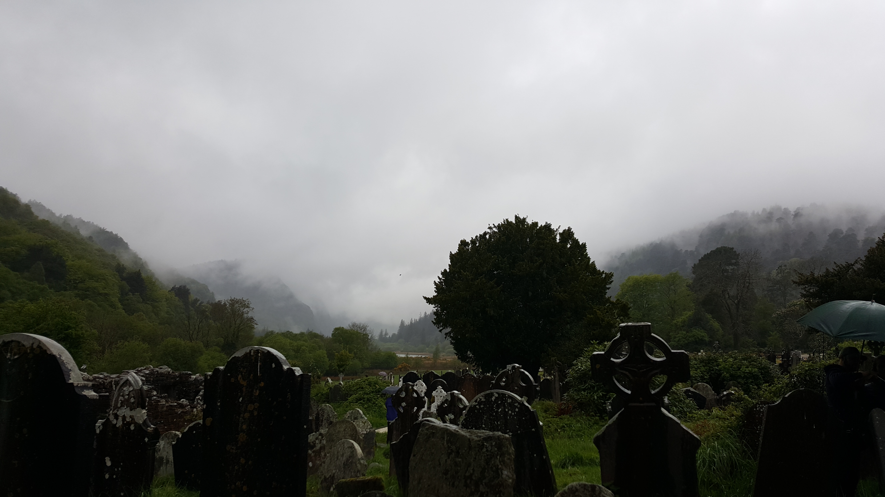

Kacy's Resume
Skills and Attributes
Professional Skills
- Strong technological proficiency, including knowledge of ArcGIS, Microsoft Office (Excel, Word, and PowerPoint), and device operating systems
- Knowledge of graphic design softwares including Adobe PhotoShop and Illustrator
- Effective communication skills and de-escalation among individuals (evidenced by working at a call center dealing with high-stress situations)
- Ability to work well independently (evidenced by success in online schooling), as well as in a team
Attributes
- Organized, reliable, and professional attitude
- Creative, evidenced by interests in photography (example below) and graphic design
- Flexible schedule and availability
- Fast learner and skilled multitasker
